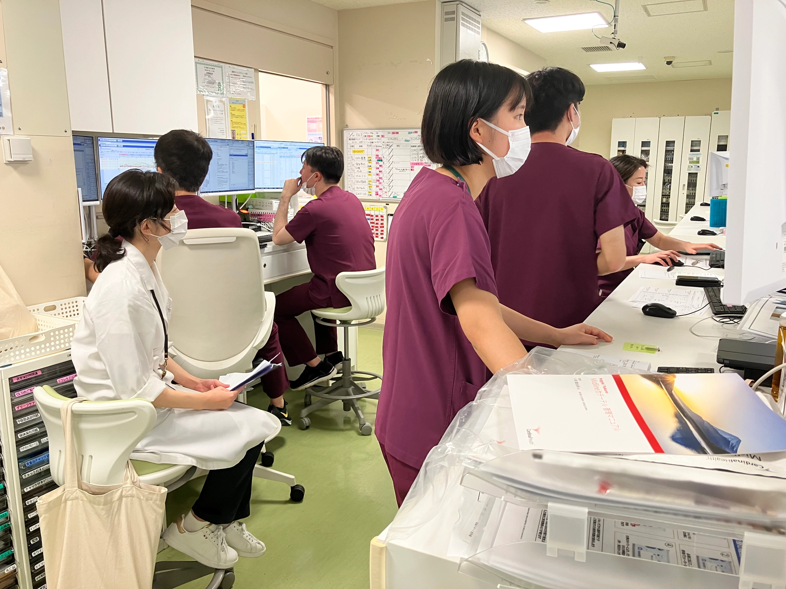

ICUにおいては、その日にやること（Plan）を明確にし、チーム内で責任を共有するためです。新たに患者のPlanを立てるには、多職種がそれぞれの視点から客観的事実（Objective Data）や状態を評価（Assessment）し、介入点を見つけ出す必要があります。
Planが定まれば、勤務中は優先順位を意識してそれらを遂行していくだけです。一方で、ここが曖昧なままだと、カンファレンス後にあらためて方針を話し合う必要が生じ、結果として時間を浪費してしまいます。日々のカルテ同様にプレゼンでもO → A → Pの流れを意識してカンファレンスに臨むようにしましょう。
カルテを見れば誰でも入手できる情報なので、多職種が集まりカンファレンスを開く意義は低そうです。上級医に質問しながらぜひ次のレベルへ！
得られた客観的事実から患者の現状を評価できました。一方、これだけでは具体的に何か変更を要するのかが伝わりません。初期研修医のうちに沢山「提案」をできるようになりましょう！
ICUの朝カンファレンスではBy Systemでの発表を行います。By Problemの評価と比較した長所・短所があるので一度目を通しておきましょう。
| By System | By Problem | |
| 長所 | 臓器ごとに網羅的に確認でき、漏れが少ない。 プレゼンの流れが定型化し、引き継ぎがスムーズ。 |
主要な臨床課題に直結しやすく、意思決定が速い。 診断仮説→介入→反応という臨床推論の流れが明確。 |
| 短所 | 「事実の羅列」「現状報告」になりがち。 プロブレムの優先順位や思考過程が見えにくい。 複数のシステムにまたがることがある。 |
ICU患者のようにプロブレムが多いと漏れが生じやすい。 軽微だが重要な臓器異常が後回し／見落とされる可能性。 |
スタッフ医師の司会のもと，以下の順に患者のプレゼンを行います

無鎮静で意識障害があるなら、それはなぜ？？
鎮静薬を使用していないにもかかわらず意識レベルが低下している場合、その原因を必ず考察しましょう。代謝性脳症、感染症、頭蓋内病変など、見逃してはならない病態が隠れている可能性があります。
そもそも患者に鎮静は必要か？
体重、浮腫、心エコー、画像所見、CVPなどを総合的に評価する。
上記を踏まえたプロブレム毎のアセスメントとプラン
上記を踏まえたプロブレム毎のアセスメントとプラン
上記を踏まえたプロブレム毎のアセスメントとプラン
抗菌薬のde-escalation / 終了は検討できるか？漫然と広域抗菌薬を継続していないか、毎日見直す習慣をつけよう。
上記を踏まえたプロブレム毎のアセスメントとプラン
入室48時間以内に経腸栄養を開始できているか？開始できていない場合、その理由と開始の見通しを明確にする。
上記を踏まえたプロブレム毎のアセスメントとプラン
今日のリハビリの目標は何か？「リハビリ継続」で終わらせず、具体的な到達目標をPTと共有する。
上記を踏まえたプロブレム毎のアセスメントとプラン
制作：ICU 関谷 ver 1.0